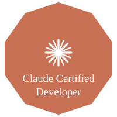

Why Claude certification matters — and why TEG is building a bench of certified talent
AI AutomationsAI is full of people who have "experience with AI." That phrase has come to mean almost nothing. Someone who prompted ChatGPT a hundred times has AI experience. Someone who took a Coursera course has AI experience. The range of actual capability beneath that label is enormous — and when you're hiring someone to build systems your business depends on, that gap matters.
Anthropic has done something about this: they now certify the people who build with Claude. There are two credentials — Claude Certified Developer and Claude Certified Architect — and they're designed to separate practitioners who actually understand how to build with Claude in production from everyone else who claims to. We're investing in that distinction at TEG, and we want to explain why.

What the Claude Certified Developer exam actually tests
The Claude Certified Developer credential is Anthropic's validation that someone can build real, production-grade applications on Claude's API. It covers the things that matter when you're building for actual use, not a demo:
- How Claude models reason, and what prompt patterns produce reliable behavior across model versions
- Tool use and multi-step agentic workflows — where things break, and how to structure them so they don't
- Claude Skills and MCP servers: how to build them, how to deploy them, how to keep them maintainable
- Context window management, caching, and cost-aware API design
- Safety guidelines and responsible use requirements built into Anthropic's platform
It's a practitioner exam, not a conceptual one. You can't pass it by having read about AI — you have to have built with it. That's the point.
What the Claude Certified Architect adds
The Architect certification goes beyond individual applications. It validates the ability to design and oversee Claude-based systems at an organizational level — the kind of thinking required when you're not building one automation but a connected set of them that share state, coordinate across tools, and need to remain auditable over time.
Architects understand how to structure multi-agent systems so they don't collapse when one piece fails. They understand governance: how to give Claude appropriate access without excessive privilege, how to log decisions for audit, how to build in human review where the stakes require it. This is the difference between a project that works at launch and a system that holds up six months later when your workflows change.
Why certification matters when you're hiring an AI implementation firm
When a B2B company hires a software development shop, they typically ask for references, look at past work, and evaluate the team's technical depth. With AI implementation, those signals are harder to read because the field is new and almost everyone's marketing sounds the same.
Certification gives you a concrete signal. A Claude Certified Developer has been measured against Anthropic's own standards for what it means to build production-grade systems on Claude. That isn't a proxy for quality — it's direct evidence of a baseline that marketers can't fabricate. It's the difference between a vendor who says they know Claude and one who has proven it to the company that built Claude.
The practical consequence is systems that work better and break less. Certified developers understand the model's actual failure modes. They know when to use extended thinking and when it's unnecessary overhead. They know how to structure prompts so behavior stays consistent when Anthropic releases a new model version. Uncertified developers learn these things the hard way — and their clients pay for that learning curve.
Why TEG is investing in certified talent
We're an Anthropic Claude Partner, which means we've committed to building serious, production-grade Claude implementations for our clients. The demand for that work is growing quickly, and keeping pace means having people on the team who are actually qualified — not generalists who picked up AI as a trend.
We're actively recruiting developers with real Claude experience and helping our existing team secure certification. When clients work with TEG, the people building their systems have been validated against Anthropic's own standards — not just self-reported experience.
If you're evaluating firms to build Claude-based systems for your organization, ask about certification. It's the clearest signal available right now that the people doing the work actually know how.
Interested in building with a certified Claude team?
Tell us what you're trying to automate and we'll show you what's possible.
Get your automation roadmap